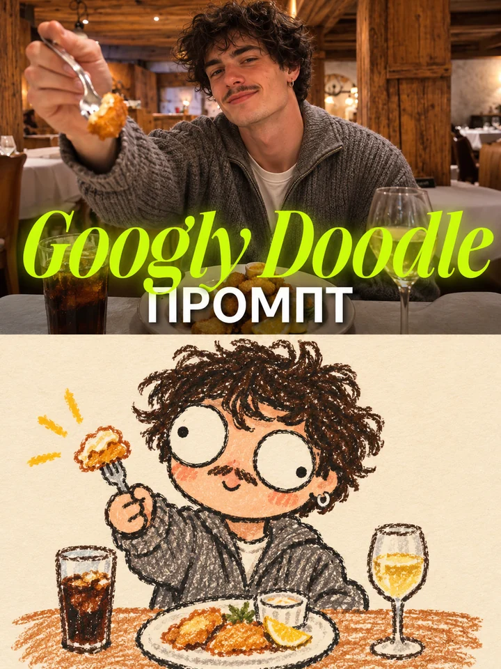
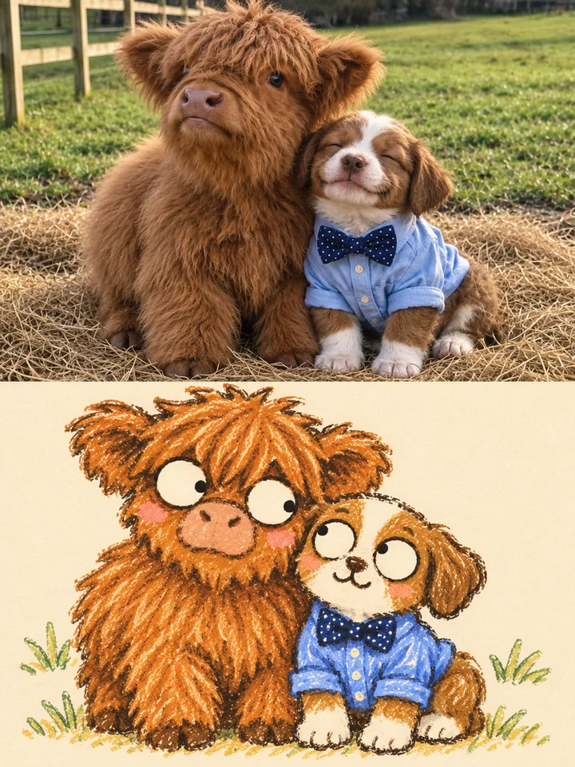

Промпт Googly Doodle
Твоё фото станет рисунком мелками: огромные глаза, румяные щёки и кремовая бумага


Что понадобится
- ChatGPT в приложении или на chatgpt.com. Подойдёт и бесплатный, но картинок там меньше
- Твоё фото. Работает и с животными, и с компаниями друзей
Шаг 1 из 2
Прикрепи фото
- Открой ChatGPT и начни новый чат
- Нажми «+» в поле ввода и выбери своё фото
Шаг 2 из 2
Вставь промпт и отправь
Скопируй промпт целиком, вставь в поле под фото и отправь
Turn the attached photo into a cute googly doodle drawing in oil pastel and crayon: thick wobbly crayon outlines, huge round googly eyes with small black pupils, round simplified faces, rosy cheeks, visible crayon texture, a few small motion lines around the character, warm cream paper background. Keep the same pose, outfit, objects and colours as in the photo. No text, no logos, no watermark. Vertical 3:4
В ответ ChatGPT пришлёт рисунок по твоему фото
Готово. Сохрани картинку и выкладывай
Если что-то пошло не так
ChatGPT пишет, что картинки закончились
На бесплатном тарифе картинок меньше. Попробуй позже, когда лимит обновится
Получилось не похоже на фото
Напиши в тот же чат: «Сохрани позу, одежду и предметы как на фото». Или возьми фото, где лица крупнее и светлее
На картинке появился текст
Напиши в тот же чат: «Убери весь текст с картинки»